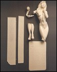
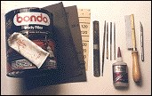
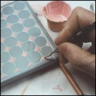
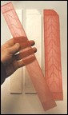
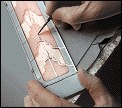
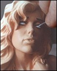
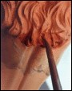
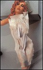
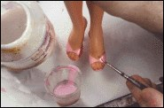
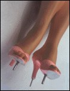

Dark Horse's designed by Dave Stevens and sculpted by Kent Melton, is a big, beautiful kit. I want to do a build-up worthy of their incredible achievement.
 As I pull the figure from the box, the first thing I notice, other than a stunningly beautiful body, is that her head looks kind of large. I doubt this is a caliper-based mistake; the sculpting is just too good in all other respects. It seems more likely that Jewel Shepherd, the gorgeous live model for this kit, simply has short legs. At any rate, I would like to fix this, and since the face is so well sculpted, I consider ways to give the illusion of a larger body instead.
 Game Plan: Sculpting
Game Plan: Sculpting
I decide to lengthen her legs below the knees 5/8 of an inch. (Note, this means the Art Deco
dressing screen will also have to be lengthened.) I'll also raise her crotch area 1/2 inch. This
will give her long, sleek legs and visually add height. Also, I plan to increase the diameter of
her breasts to make her upper body look larger.
Game Plan: Painting
This piece is designed in an Art Deco style which had signature colors, grays and pastels
mostly. And, since this is a very feminine piece anyway, I decide on a color scheme of soft
grey and pink.

Tooling up
First, I lay out all my stuff, like "Bondo", an auto body filler that comes with a tube of cream
hardener. (The $15 one-gallon can shown in the photo has built about 15 models.) Also, I lay
out a selection of sand papers. 100 to 40 grit, and an array of files, from coarse to fine,
with various shapes, Cyanoacrylate (super) glue, an X-acto(TM) saw, which is what I used
to saw off her legs, and an X-acto knife outfitted with a #11 blade.
Modifying the Figure
The 5/8 inch section I add to her legs will have to be extremely strong, so I will pin with very
hard, 3 inch drywall screws. The de-headed screws fit snugly into the holes drilled into the
bottom of the legs, but loosely in the holes at the top part of the legs. This slop allows me to
move the piece around a little bit in order to get the precise alignment. Once I'm sure my
added length looks right, (Left Photo Below) I remove the drywall screws, slather mixed Bondo all
over the threads, re-insert them into the holes, and hold in position until the body putty sets
(about ten minutes). Now, I can start filling in the big gap with batches of Bondo. (Middle Photo Below)
I am surprised how much meat I must add to her calves to make the added length look
natural. (Right Photo Below) I file between each application with a coarse rat-tail file.


 Next comes
raising the pelvic area. This is a simple process of excavating material. I use a variable speed
Dremel Moto tool for the big gouging. It has plenty of power, and outfitted with a toothy
metal bit, makes quick work. But this job does require carefulness. As I start to get close, I
switch to coarse sandpaper and go slowly. The towel's edge will require redefining as it falls
back into her newly located crotch. The pencil line indicates where her crotch
used to be.
Next comes
raising the pelvic area. This is a simple process of excavating material. I use a variable speed
Dremel Moto tool for the big gouging. It has plenty of power, and outfitted with a toothy
metal bit, makes quick work. But this job does require carefulness. As I start to get close, I
switch to coarse sandpaper and go slowly. The towel's edge will require redefining as it falls
back into her newly located crotch. The pencil line indicates where her crotch
used to be.
 Now, for some "Bondo" implants. Note that increasing the diameter of one breast means the
other breast, even though hidden under the towel, must be altered as well. That
done, I pin and putty the arm, and finish-sand all worked surfaces down to 220 grit, filling
little holes and seams as I go.
Now, for some "Bondo" implants. Note that increasing the diameter of one breast means the
other breast, even though hidden under the towel, must be altered as well. That
done, I pin and putty the arm, and finish-sand all worked surfaces down to 220 grit, filling
little holes and seams as I go.

Priming the Figure
Now I'm ready to prime. I first wash the piece thoroughly, dry, and spray light coats. I let
the primer dry, fill any evident pinholes and scratches, re-sand, re-prime, and finish with a
400 grit sanding. It's ready for color now, but I want the primer to dry really well, so l set it
aside to work on the base and screen.

Painting the Base
I begin painting with an easy job - the base. I airbrush it an Art Deco-ish light grey, protect it
with Krylon Crystal Clear, and blow dry. Then, with my fingers, I smear White acrylic paint
all over the protected surface, pushing it into the grout lines. I let the white dry a bit, then,
wetting a paper towel with airbrush cleaner, I wipe the surface. This cleans the white paint
off the tiles but leaves it in the grout lines. This process is a super-quick shortcut. I next paint
the little diagonal tiles with a brush using a premixed batch of Deco Pink. Finally, a little
brass lacquer on the bullet casings and I give the entire base a gloss finish with Krylon
Crystal Clear.

The Dressing Screen
I have a special idea in mind for the screens
which requires recasting. First, I lengthen the screens 5/8 inch (to match the 5/8 inch added
to her legs) by hot-gluing a piece of 1/8 inch thick foamboard to the screen bottoms. I then
make quick waste molds of the two lengthened screens with molding rubber and plaster, (I
go into more depth on the video) and cast into the molds with clear, pink-tinted resin. See
both the original and recast screens.
This whole recasting process takes a full day, but I feel the effort will be well worth it. To paint the screens, I begin by masking every other decorative section on both sides, with Maskoid, a liquid rubber frisket (Left Photo Below) After the rubber dries, I simply mist both sides with white paint, not a lot, just enough to get a frosted glass look. Peeling off the rubber frisket reveals the clear areas. (Right Photo Below) I seal, and shine up the entire surface, with Krylon Crystal Clear.
 Now, with drafting tape. I mask off the decorative center portion of the screens and spray the borders with the same light grey as the floor tiles. Next, is the detailing. I want a leaded glass look, so I need a metallic silver paint. I use Duplicolor's automotive Chrome bumper retouching lacquer. It's a spray that dries fast, like Testor's silver. but is more metallic looking. I spray into the cap of the can and use a small brush to dip it out. I paint all of the raised areas to get the leaded glass look.
Attaching the Screens
Next, I hold the two screen pieces in position on the base to find the angle that looks best. I
reproduce the obtuse angle I decide upon out of foamboard, and then tape the two screen
sections to this foamboard "jig". I run a bead of glue between the screens and tape the seam
tight giving it about an hour to develop a really strong bond.

 Flesh Basecoat
Flesh Basecoat
I want to spend a little time discussing flesh coloration because I get so much mail on this
subject. First, I never paint skin tones at night. Artificial light is virtually useless for gauging
flesh colors. I always wait for daylight and let as much indirect sunlight into the studio as
possible. Secondly, I mix my own flesh, because store-bought flesh, which is usually just a
variation on tan, looks as dead as dirt. I mix a large bottle of a personal recipe, which is a
colorful mixture of orange, pink, brown, yellow and white acrylic airbrush paint. I find this
lively color imbues a statue with life. (see flesh color chart on opposite page) Getting good
flesh is as difficult a color problem as there is, because each kit makes its own demands. In
this case, I want to show a brand new pink suntan, on a still warm, freshly bathed,
fair-skinned girl. This is a tall order, and I know I can only find this color on the piece by
airbrushing layers, adjusting lighter, darker, pinker, or yellower until I am satisfied I've got
just the right look. By that time, as usual, I will have built up a pebbly surface. I have a way
of remedying this that I discovered almost by accident. Dipping my fingertip into the final
color, I rub it in. a section at a time. with circular motion. As I continue rubbing, the drying
acrylic paint begins to get tacky and sort of wet-sands the high spots, depositing that slurry
of dry and wet paint into the small micro pinholes and depressions. This renders a
remarkably smooth almost glossy finish.
Flesh Modulation
I keep plenty of this final flesh color around in order to mix variations, because skin tones
change on different parts of the body. Crevices, like the spine, and depressions, like the
hollows between the musculature of her legs and stomach, can be airbrushed slightly darker,
raised areas slightly lighter.
Next, I mix a very light creamy color and spray on bikini tan lines. (Left and Middle Photos Below) When I'm happy with all the various shades of flesh on her body, I protect the work with a layer of Testor's clear dull coat and wait overnight before I handle the piece again.
I look at the piece again in the fresh morning light and decide to do just one more thing before starting on the face. I want to indicate that she has just emerged from a warm shower, so I pinken her shoulders, chest, and thighs slightly. I then mist her buttocks with a darker rosy pink. This gives her bottom that sort of flushed look, as if still warm from her fresh bath, or, as my too-perceptive wife kids me, still warm from her fresh "spanking". (Right Photo Below)
The Face
Now for the face. Before I begin, I decide what I want. Since her pose is languid, I decide a
"sultry" expression will best complement the sensuous body language. As always, I start with
the eyes, beginning with mascara. I first draw a bold, voluptuous black shape, bringing the
paint down low, into the whites of her eyes, bypassing the sculptor's edges. I want that
sleepy, half-closed look. I go heavier on the mascara at the upper outside and thin to a
tapered black line for lower lashes, leaving a line of the fleshy pink between the lower lashes
and the whites of the eyes. (See eye drawing below.)

I fill in dark, red brown eyebrows, and soften the edges with tangerine. For eyeshadow, I start from the eyelid up using a rich pinkish-brown, feathering it out as it nears the eyebrow. But I leave her eyelids light. By trapping light between the dark eyeshadow and the jet black mascara, attention is focused to the droopy lids, enhancing the sultry look. Now, to really kick off the eye framing, I bring a swipe of this dark eyeshadow a underneath her lower lashes, giving her eyes a slightly bruised look.
 Inside the eyes, I start out with pure white, but soften the corners with a dab of flesh mixed in. I paint the top third grey since her long eyelashes would cast a shadow across the whites. I really like the combination of green eyes with red hair. I'm not sure Jewel Shepherd has this arrangement, but...it's my model, not hers, so I mix up the brightest lightest lime green I can make. I draw a green disc letting the top half disappear behind the semi-shut lids. I outline the iris with darker green to help make them look reflective. For the pupil, a simple black dot that touches the upper eyelashes.
To finish the nose, I just drybrush a fuzzy line of lighter flesh color down the bridge to the tip. For the nostrils, dots of darker flesh, and a teeny, slightly darker line to define the outer creases of the nostrils.
I have a secret for lipstick - Liquitex Fluorescent Pink. I mix it with normal red, for candy-colored lips that practically beg to be kissed. I paint the upper lip and the underneath part of her bottom lips slightly darker. Here too, I tend to ignore the sculptor's edges, going just a bit beyond to give them a fuller, more pouty look. Just above her chin, I feather a darker flesh color. This makes her lips pop out even more.
Remember my preference for fresh lively skin coloration? Well, this may be a bit of a shock, but I put the Florescent paint into my airbrush and lightly mist the apples of her checks, also giving a very slight hit to the eyeshadow area. This simple move gives her whole face a really fresh, lively, ingenue glow.


Hair
Using Maskoid, I brush two rubbery coats over her face, shoulders, breasts, and towel for
protection. While this dries, I mix up a colorful tangerine color for the hair. (see color chart)
I airbrush on a covering basecoat, let dry, and lightly seal with Testor's clear dull coat. Then,
I mix up a watery brick red wash, adding a few drops of airbrush cleaner to make it flow.
Holding the piece upside down, and twisting, so the drips don't run down the
body, I flood the wash all over the hair with a big brush, letting the color gather in the
crevices.
After the wash dries, I dip a Q-tip in airbrush cleaner, and wipe the wash off the high spots, revealing the tangerine color underneath. Now, I have highly defined dark and light areas, in fact...a bit too defined. My solution is to mix a darker version of the tangerine and mist all of the hair. This simultaneously lightens the dark areas and darkens the light areas. Finally. I remove the rubber Maskoid frisket (Left Photo Below) to reveal a finished head (Right Photo Below).

With a little of the light reddish-brown hair color, I paint the exposed nipple, lighter on the top areas, darker on the underside.
 To mask around the towel, I consider the rubber Maskoid again, but it's fairly expensive stuff, and since the towel has a lot of straight lines I opt instead for drafting tape. Even with drafting tape's minimal adhesive, I press it on my cotton T-shirt to lessen the tack further; I REALLY don't want tape pulling up paint. Once masked, I lightly mist the higher edges of the towel with pure white, letting some of the underneath flesh color peek through the crevices.
 Using the Deco pink, I brush two decorative borders for the towel. And while I've got the
pink on the brush, I line some of the crevices. Now, I can remove the tape. While gently
pulling, some places seem to stick a bit. These I blow with a hot air dryer to loosen the glue.
In no time, all the tape is removed.
Using the Deco pink, I brush two decorative borders for the towel. And while I've got the
pink on the brush, I line some of the crevices. Now, I can remove the tape. While gently
pulling, some places seem to stick a bit. These I blow with a hot air dryer to loosen the glue.
In no time, all the tape is removed.
 The figure is near completion now, leaving the easy, fun stuff. I paint her dainty little slippers with my batch of pink. I mix some of the darker florescent lipstick color with the pink batch, for fingernail and toenail polish. With dark flesh, I draw thin lines to further delineate deep crevices, like between the fingers and toes, and to help separate the clothing from the flesh.
 Gun
Gun
For the gun, I apply the Duplicolor chrome bumper spray paint, with a brush. (dries in 30
seconds) and then line the crevices with black acrylic. For a feminine touch, I mix a
pinkish-white and paint the handgrips to give them a mother-of-pearl look.
 Gloss details
Gloss details
I always know the piece is just about done when I get to this next step. I haul out the
Liquitex Gloss Medium, and slather it over her little pink shoes. Just flood it on,
and leave it alone. Even though it goes on milky and has streaks, it eventually puddles out
and dries to a beautiful glassy finish. I puddle a coat over the mother-of-pearl gun handles,
fingernails, and toenails. I also give her glassy-looking eyes and drippy-wet lips. These small
touches never cease to amaze me. The contrast in surface really makes her come alive.

Attaching the Figure
As with the screen, I scrape away paint from the contact points to get a strong resin-to-resin
bond; the shoes, the floor, under her wrist, and where her wrist hits the screen. I pin her
shoes in three places, with two strong 4D finishing nails, and a large paper clip for the
narrow heel. I drill out receiving holes in the base, glue all contact points, and I
push her down, holding till set. Suddenly....Voila! I'm finished!
You know, everyone comments on host beautiful the 'girl' is in this kit. No doubt about that. but I'd like to take this opportunity to point out two 'abstract' qualities, which I admire even more.
One, is the sublime Yin Yang balance between the strong "geometric" lines of the dressing screen, and the flowing "organic" lines of the figure. This is very deliberate. But even more astonishing, is that by posing her casually leaning on her Deco counterpart, this rather 'overt' abstract relationship is framed so completely naturally, as to all but disappear - a tour-de-force of subtlety.
Secondly, this is in essence, a "classical" sculpture, in that it is interesting in all three dimensions. In fact, as I turn this piece to the side. I find the elegant lines of the legs to be the kit's best feature. And from behind. the sensuous S-curve of her body is even more aesthetically pleasing to me than the frontal view. Any way you look at it. this is indeed a very "Special" kit.
Mike James is a sculptor currently living & working in Pennsylvania at his Azimuth Design studio. To see his own kits on the Internet type:
To order an in-depth video about this build-up of .38 Special, contact: Azimuth Design, P.O. Box 157, Equinunk, PA 18417 717-224-4081 or email: arthouse@ptd.net
The Gremlins in the Garage webzine is a production of Firefly Design. If you have any questions or comments please get in touch.
Copyright © 1994-1997 Firefly Design.